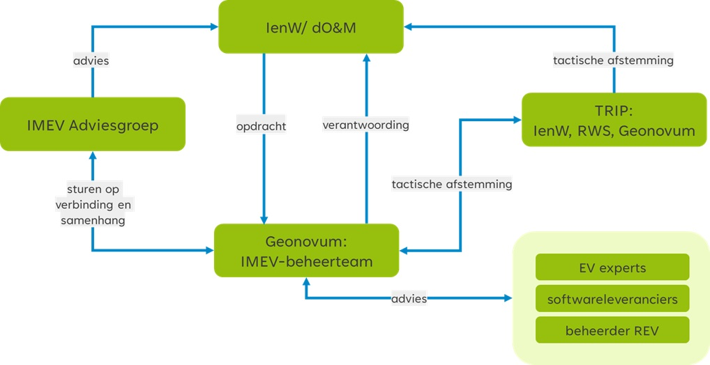
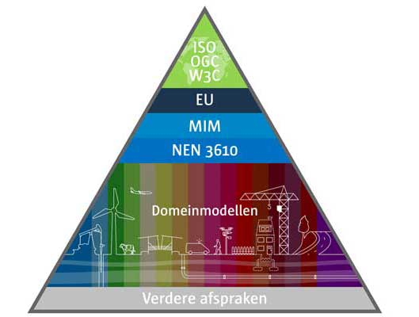
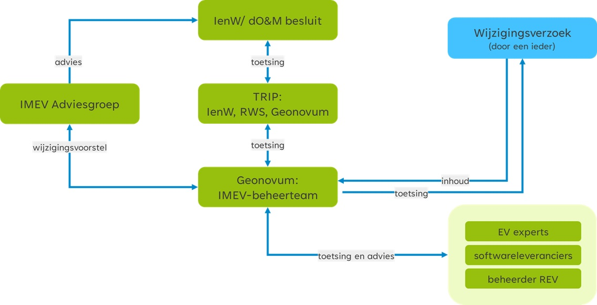

Dit document wordt bijgewerkt op basis van ontwikkelingen rond het beheer van het Informatiemodel Externe Veiligheid. In onderstaand overzicht houden wij de status van verschillende versies van dit document bij. Zo ziet u altijd wanneer de laatste versie is verschenen.
Tabel 1 - Document versiebeheer
Versie
Datum
Status
Aanpassing
1.0
November 2023
Definitief
Oplevering
1.1
27 augustus 2025
Definitief
- Actualisatie beheerplan.
- Omzetting beheerplan naar publiek document voor ontsluiting via de Geonovum website.
- Naast actualisatie zijn de wijzigingen: paragraaf Governance toelichting TRIP en Adviesgroep toegevoegd; paragraaf Visie is de koppeling met het DSO toegevoegd; paragraaf Architectuur zijn de API standaarden, NL-SBB, IMOW en IM Geluid toegevoegd; paragraaf Initiatie is de rol van de Adviesgroep toegelicht.
1. Inleiding
1.1 Introductie
Onder de Omgevingswet worden gegevens over externe veiligheidsrisico’s via het Register Externe Veiligheidsrisico's verzameld, beheerd en beschikbaar gesteld. In dit register staan bijvoorbeeld alle bedrijven die brandbare, explosieve, giftige en nucleaire stoffen verwerken of opslaan en transportroutes en buisleidingen voor gevaarlijke stoffen.
Voor de meeste milieubelastende activiteiten met veiligheidsrisico's is de provincie of de gemeente het bevoegd gezag. Het Ministerie van Economische Zaken en Klimaat verzamelt de gegevens voor het aanleggen en exploiteren van een mijnbouwwerk. Het Ministerie van Infrastructuur en Waterstaat verzamelt de gegevens voor buisleidingen. Net als de gegevens voor het basisnet. Voor vervoer van gevaarlijke stoffen over andere openbare wegen en vaarwegen, verzamelt de beheerder van die (vaar)wegen de gegevens. Afhankelijk van de (vaar)weg is dit de gemeente, de provincie of het waterschap.
Om deze gegevens allemaal op dezelfde manier beschikbaar te kunnen stellen via het Register Externe Veiligheidsrisico's (REV), is er het Informatiemodel Externe Veiligheid. Dit informatiemodel beschrijft de structuur waarin gegevens moeten worden vastgelegd zodat de gegevens zowel door een machine als een mens te verwerken zijn. Daarbij is er veel aandacht voor de betekenis – de semantiek - van gegevens. Er zijn immers verschillende aanleverende partijen betrokken en veel verschillende afnemers van de data die in het REV is opgeslagen. Voor ieder van hen moet de betekenis van gegevens eenduidig zijn. Daarom is het informatiemodel uitgerust met een gegevenswoordenboek. Hierin zijn de gehanteerde begrippen zo eenduidig mogelijk vastgelegd.
In het informatiemodel externe veiligheid staat:
welke gegevens opgenomen worden in het REV;
wat die gegevens precies betekenen;
de structuur van de gegevens in de vorm van objecten, attributen en relaties;
of een gegeven verplicht is of niet;
welke overige afspraken kunnen worden vastgelegd over de gegevens;
en hoe deze gegevens in het register moeten worden vastgelegd.
De nadruk van het informatiemodel ligt op het beschrijven van de gegevens die noodzakelijk zijn om de plaatsgebonden risicocontouren en aandachtsgebieden uit te wisselen die horen bij operationeel uitgevoerde externe veiligheidsactiviteiten.
Welke gegevens bevoegde gezagen ten aanzien van de externe veiligheid moeten verzamelen, staat beschreven in artikel 11.2 tot en met 11.7 van het Besluit kwaliteit leefomgeving (Bkl). In bijlagen VII-X van het Bkl zijn de kenmerken over opslag, productie, gebruik en vervoer van gevaarlijke stoffen, windturbines en de milieubelastende activiteiten met vastgestelde afstanden opgenomen. Het informatiemodel beschrijft hoe deze locatiegebonden veiligheidsrisico's moeten worden vastgelegd en beschikbaar moeten worden gesteld aan het Register Externe Veiligheidsrisico's. Het informatiemodel externe veiligheid is daarmee de basis voor software waarmee de bevoegde gezagen hun gegevens aan het register aanleveren. Het informatiemodel externe veiligheidwordt in opdracht van het Ministerie van Infrastructuur en Waterstaat beheerd door Geonovum. Met dit beheerplan geeft Geonovum inzicht wat het beheer is en hoe wij dat uitvoeren.
De data uit het Register Externe Veiligheidsrisico's is te bekijken via de Atlas Leefomgeving. Burgers en bedrijven kunnen zo een beeld krijgen van de risico's in hun leefomgeving. Het REV is ook van belang voor het bevoegd gezag. Via het REV kunnen verschillende overheden de door hen ingewonnen gegevens over externe veiligheidsrisico’s gemakkelijk delen. De overheid heeft deze gegevens nodig voor de oordeelsvorming bij het nemen van besluiten over omgevingsvergunningen en voor omgevingsplannen.
Het REV is een landelijk register en vervangt sinds 1 januari 2023 het register risicosituaties gevaarlijke stoffen (RRGS). Het REV is de basis voor alle data rond externe veiligheidsrisico’s. Het beheer van dit register valt onder de verantwoordelijkheid van het Ministerie van Infrastructuur en Waterstaat (artikel 11.8 van het Besluit kwaliteit leefomgeving (Bkl)). Het beheer van het REV wordt uitgevoerd door Rijkswaterstaat (WVL).
1.2 Ontwikkelen en beheren van standaarden
Sinds 2021 beheert Geonovum het Informatiemodel Externe Veiligheid (IMEV). Wij doen dat in opdracht van het Ministerie van Infrastructuur en Waterstaat (IenW). Geonovum beheert ook de standaarden voor de aanpalende thema’s in de Omgevingswet, zoals Informatiemodel Geluid in opdracht van RIVM en de Toepassingsprofielen voor Omgevingsdocumenten (TPOD) in opdracht van het Ministerie voor Volkshuisvesting en Ruimtelijke Ordening (VRO). Daarnaast is Geonovum betrokken bij de aansluiting van informatiebronnen (zoals het REV) op het Digitaal Stelsel Omgevingswet (DSO-LV). Tevens werken wij in opdracht van het Ministerie van Infrastructuur en Waterstaat aan de standaarden voor het Digitaal Stelsel VTH. In het kader van de Europese datastrategie zijn wij betrokken bij de ontwikkeling van dataspaces, met name die voor de Green Deal.
De maatschappij beter laten presteren met geo-informatie. Dat is waar wij bij Geonovum dagelijks aan werken. Onze ambitie is een geodata infrastructuur waarop je letterlijk en figuurlijk kunt bouwen. Of je nu geo-specialist bent, beleidsregels maakt, een vergunning aanvraagt of apps bouwt. Wij doen dit door ontwikkelingen rond geo-informatie te verkennen, door partijen te verbinden en door gemaakte afspraken in standaarden te verankeren. Dit doen wij in opdracht van en voor de overheid. Geonovum is een organisatie met veel kennis en een rijk netwerk. Wij opereren doelgericht, zelfstandig en pragmatisch. Onze inhoudelijke specialismen zijn de standaardisatie en architectuur van de geo-informatie infrastructuur. Onze organisatorische expertise ligt in het vermogen verschillende partijen met elkaar te verbinden en samenwerking tot stand te brengen.
De stichting Geonovum is in 2007 opgericht door het ministerie van VROM. De grondslag voor Geonovums werk is vastgelegd in het convenant Nationale Geo-Informatie Infrastructuur tussen het ministerie van Binnenlandse Zaken en Koninkrijksrelaties en Geonovum.
Bij de ontwikkeling van standaarden volgen wij de FAIR principes: geodata moeten Findable (vindbaar) zijn, Accessible (toegankelijk), Interoperable (interoperabel) en Reusable (herbruikbaar).
Het beheer van onze standaarden geven wij gestalte en voeren wij uit in de context van de standaarden, architectuur en voorzieningen en de gebruikers in de keten. Leidraad in bij het (door)ontwikkelen en beheren van standaarden is het ‘Beheer en Ontwikkel Model Open Standaarden’: BOMOS (zie Figuur 1). Geonovum past in haar werk de BOMOS en FAIR-principes toe. Dit draagt bij aan de voorspelbaarheid van onze werkwijze en onze resultaten. We zijn bereikbaar voor alle gebruikers van onze standaarden: we sluiten niemand uit en we hanteren het ‘no wrong door’-uitgangspunt bij de helpdesks.
Figuur 1De structuur van het Beheer- en Ontwikkelmodel voor Open Standaarden
1.3 Leeswijzer
In dit beheerplan geven wij per BOMOS hoofdactiviteit welke activiteiten we uitvoeren voor het beheer de doorontwikkeling van het Informatiemodel Externe Veiligheid. Achtereenvolgens komen in dit beheerplan aan de orde:
Governance, visie en financiën zijn de strategische activiteiten voor het beheer van standaarden.
2.1 Governance
In opdracht van het Ministerie van Infrastructuur en Waterstaat beheert Geonovum het Informatiemodel Externe Veiligheid. Inhoudelijke en financiële verantwoording legt Geonovum af via kwartaalrapportages. Jaarlijks leggen wij de feedback van de opdrachtgever over ons werk vast door middel van een evaluatie. Door middel van een meerjarige opdracht is de inzet van mensen voor het beheer van het IMEV voor de lange termijn geborgd.
Rijkswaterstaat is in opdracht van het ministerie van IenW de beheerder van het Register Externe Veiligheidsrisico’s. Rijkswaterstaat is daardoor de senior user van het informatiemodel. In Figuur 2 is de organisatiestructuur weergegeven voor het beheer van het IMEV. In Tabel 2 is de governance van de IMEV beheeropdracht samengevat.
Tabel 2 - Governance beheeropdracht IMEV
Organisatie
Rol
Ministerie van Infrastructuur en Waterstaat, Directoraat-generaal Milieu en Internationaal
Opdrachtgever – Rianne Dobbelsteen
Geonovum
Opdrachtnemer – Monique van Scherpenzeel
Rijkswaterstaat (WVL)
Beheerder Register Externe Veiligheidsrisico’s en senior user van het IMEV – Bob Felix

Figuur 2Organisatiestructuur IMEV op basis van BOMOS
Er zijn twee gremia die niet onderdeel zijn van de governance maar op tactische niveau wel bijdragen aan de uitvoering van de IMEV beheeropdracht: de IMEV Adviesgroep en het Tripartite overleg (TRIP).
De bronhouders worden via de koepels IPO, VNG en ODNL vertegenwoordigd in de IMEV Adviesgroep. Ook het ministerie van IenW als opdrachtgever, Rijkswaterstaat als beheerder van het REV en Geonovum als beheerder van het IMEV nemen deel aan deze adviesgroep. De adviesgroep heeft een onafhankelijk voorzitter. Het doel is het controleren van het tot zover doorlopen wijzigingsproces, het wijzigingsvoorstel van advies te voorzien en dit advies aan de opdrachtgever voor te leggen. De opdrachtgever besluit of de wijzigingen worden doorgevoerd op het IMEV.
In het TRIP stemmen het ministerie van IenW, Geonovum en Rijkswaterstaat op basis van beleid en visie de roadmap en planning van het beheer en de doorontwikkeling van het IMEV en REV af.
2.2 Visie
Geonovum ontwikkelt en beheert nationale en sectorale standaarden op het gebied van geo-informatie. De standaarden die Geonovum in beheer heeft, zijn ingebed in nationale en internationale standaarden. Geonovum voert beheertaken transparant uit en in samenwerking met belanghebbende partijen. Alle activiteiten in het beheer en (door)ontwikkeling zijn gericht op het structureel werken aan, beschikbaar stellen en houden van een (set van) standaard(en) die steeds past bij de actuele behoefte van de belanghebbenden.
Beheer van een standaard betekent altijd beheer én ontwikkeling van die standaard. Het beheer van standaarden heeft betrekking op het beschikbaar houden en aanpassen van bestaande standaarden op basis van nieuwe wensen en eisen zonder dat er sprake is van functionele uitbreidingen. Denk aan het voor iedereen toegankelijk maken van een standaard op een website, het bieden van implementatie ondersteuning, het verzamelen van wensen en eisen en naar behoefte uitbrengen van nieuwe versies.
Het ontwikkelen van standaarden heeft betrekking op de ontwikkeling van oplossingen voor nieuwe functionaliteiten. Dit kan betekenen dat op basis van de ontwikkeling de bestaande standaard wordt uitgebreid, bijvoorbeeld op grond van wet- en regelgeving worden nieuwe milieubelastende activiteiten aan het IMEV toegevoegd, of dat er een nieuwe standaard ontstaat, bijvoorbeeld afspraken rondom visualisering op uitwisseling.
De grondslag voor het beheer en de (door)ontwikkeling van het IMEV:
Omgevingswet;
Besluit kwaliteit leefomgeving;
Besluit activiteiten leefomgeving;
Omgevingsbesluit;
Omgevingsregeling (artikel 12.2).
De documentatie met uitgangspunten (visie, doelarchitectuur) van het Digitaal Stelsel Omgevingswet (DSO) vormen de randvoorwaarden voor het REV. In het DSO is ervoor gekozen gegevens te ontsluiten vanuit de bron. Het REV is een van de eerste vier informatieproducten die worden gekoppeld aan het DSO. De gegevens over externe veiligheidsrisico’s zijn daardoor ook via het Omgevingsloket van het DSO te gebruiken. Het in 2024 gestarte programma Digitaal Stelsel VTH is voor Geonovum en Rijkswaterstaat een belangrijke ketenpartner voor het VTH-proces bij de bronhouders.
2.3 Financiën
Sinds 2021 beheert Geonovum het Informatiemodel Externe Veiligheid. Wij doen dat in opdracht van het ministerie van Infrastructuur en Waterstaat. In het kader van een meerjarige opdracht volgt de financiering uit een jaarlijks offerteverzoek van IenW, offerte van Geonovum en vaststelling bijdrage door IenW. Jaarlijkse wordt het benodigd budget tussen opdrachtgever en opdrachtnemer afgestemd.
Eens per kwartaal rapporteert Geonovum aan het ministerie van IenW over de voortgang van het beheer van de standaard. Naast rapportage over activiteiten en resultaten, leggen wij met de kwartaalrapportage ook verantwoording af aan de opdrachtgever over de besteding van het toegekende budget.
3. Tactiek
Community, architectuur, rechtenbeleid, adoptie en erkenning, kwaliteitsbeleid en benchmarking zijn de tactische activiteiten voor het beheer van de standaarden.
3.1 Community
Stichting Geonovum heeft een onafhankelijke positie als beheerder van geo-standaarden. Het ontwikkelen en beheren van standaarden doen wij open en transparant. Betrokkenheid van de gemeenschap bij de verdere doorontwikkeling van de standaarden is voor het gebruik en het draagvlak ervan van groot belang. De standaarden gelden voor en worden gebruikt door publieke en private organisaties en bijvoorbeeld kennisinstellingen. Zij vormen samen de community. Alle (overheids)stakeholders, en commerciële stakeholders, hebben inspraak in het beheer en (door)ontwikkeling van het IMEV in vorm van bijvoorbeeld leveranciers- en bronhoudersoverleggen maar zij zijn niet beslissingsbevoegd (zie Figuur 2). Aan deze inspraak zijn geen kosten verbonden.
Er zijn verschillende gremia die het EV netwerk bijeenbrengen. De gremia zijn met name op operationeel niveau ingericht en hebben tot doel het gebruik van het REV, de kennis en ervaring met het REV en actualiteiten te delen. Het IMEV-beheerteam neemt deel aan het door Rijkswaterstaat georganiseerde bronhoudersoverleg, het Operationeel Overleg Gebruikers (OOG - gebruikers van de REV data) en het Operationeel Overleg Registrerende gebruikers (OOR - leveranciers van de REV data). Het IMEV-beheerteam levert ook een tactisch en operationele bijdrage aan bij het REV beheerteam voor het verbeteren van de datakwaliteit van het REV. Geonovum organiseert het softwareleveranciers overleg gericht op de technische implementatie IMEV. Doelgroep voor deze bijeenkomst zijn softwareleveranciers, buisleidingbeheerders, omgevingsdiensten en veiligheidsdiensten die software ontwikkelen voor het aanleveren en muteren van data in het Register Externe Veiligheidsrisico's.
Geonovum informeert en betrekt de community via haar website en via nieuwsbrieven van de beheerder van REV en Geonovum zelf. Vanuit de community worden (al dan niet ad hoc) werkgroepen gevormd voor het klankborden over ontvangen wijzigingsverzoeken en het ontwikkelen van oplossingen op het moment dat dit nodig is. De vergaderdata van deze werkgroepen worden gepubliceerd op de Geonovum website en de REV website. Inschrijven voor bijeenkomsten over het IMEV is mogelijk via imev@geonovum.nl.
3.2 Architectuur
Onze standaarden en informatiemodellen ontwikkelen wij niet in splendid isolation; ze moeten opgehangen zijn aan en/of binnen nationale en internationale standaarden. Door onze producten op te hangen aan, of in te passen in nationale en internationale standaarden, architecturen en infrastructuren, wordt de uitwisseling van gegevens gemakkelijker en hoeft niet iedere keer het wiel opnieuw te worden uitgevonden.
Het IMEV wordt permanent afgestemd met de volgende standaarden:
Metamodel voor informatiemodellering – MIM;
Standaard voor beschrijven van begrippen - NL-SBB;
INSPIRE en Europese richtlijnen (waaronder Seveso);
Basismodel voor geo-informatie - NEN3610 (zie Figuur 3);
De internationale API standaarden zijn volop in ontwikkeling en zullen effect hebben op de IMEV API specificaties. Ook de ontwikkeling van de standaarden voor het Digitaal Stelsel VTH, waaronder het CIM VTH Flo, zullen op termijn invloed kunnen hebben op de doorontwikkeling van het IMEV.

Figuur 3IMEV als domeinmodel onder het nationale NEN3610 Basismodel voor geo-informatie
3.3 Rechtenbeleid
Het onderwerp rechtenbeleid uit BOMOS vertaalt zich naar gebruiksvoorwaarden van de producten van de standaarden. Niet alleen voor de documentatie maar ook voor de technische bestanden.
Geonovum hanteert Creative Commons om voor de producten van de standaarden aan te geven voor wie en op welke wijze de standaarden beschikbaar zijn:
Elk nieuw document dat vanaf 1 januari 2018 door Geonovum wordt gepubliceerd, is voorzien van de volgende licentie: https://creativecommons.org/licenses/by-nd/4.0/deed.nl (kort: CC BY-ND 4.0).
In het geval (delen van) standaarden zijn opgenomen in wet- en regelgeving (zoals het geval is bij het IMEV) zijn de gebruiksvoorwaarden van Geonovum niet van toepassing omdat de Nederlandse wetgeving boven creative commons geldt. De grondslag voor het gebruik van het informatiemodel externe veiligheid is opgenomen in artikel 12.2 van de Omgevingsregeling van de Omgevingswet.
Geonovum zorgt ervoor dat de documentatie van onze standaarden toegankelijk is conform de WCAG richtlijnen. Hiervoor gebruiken wij html-formaat conform ReSpec (zoals met dit document). De Nederlandse set van ReSpec afspraken wordt door Logius beheerd.
3.4 Adoptie en erkenning
Het gebruik van de standaarden is niet vanzelfsprekend. Voor de adoptie en erkenning van het IMEV is het van belang dat de standaarden goed aansluiten bij de werkpraktijk. De samenwerking met gebruikers- en expertgroepen van het IMEV en het REV is daarom cruciaal. Om signalen vanuit de dagelijkse praktijk vroeg op te kunnen vangen, neemt Geonovum ook deel aan bij de bronhoudersoverleggen. Via de REV-nieuwsbrief houden wij het netwerk op de hoogte van ontwikkelingen en kunnen we antwoorden op veel gestelde vragen proactief delen.
3.5 Kwaliteitsbeleid en benchmarking
Kwaliteit is de basis voor een bruikbare standaard. Het gebruik, de bruikbaarheid en de gebruikers staan centraal. De standaard is een middel in het werkproces van overheden die hen beter moet laten presteren. Periodiek overleg met de IMEV Adviesgroep, overleggen met softwareleveranciers, opdrachtgever, bevoegde gezagen c.q. bronhouders, andere gebruikers van de standaard, belanghebbenden en contacten via de helpdesk zijn instrumenten die ons helpen de kwaliteit van het IMEV te bewaken en te verbeteren. De technische kwaliteit van de toepassing van de standaard is te toetsen met behulp van validatieregels. Voor het wijzigen van de standaard hanteren we een vaste werkwijze dat is vastgelegd in het Wijzigingsprotocol Informatiemodel Externe Veiligheid.
BOMOS en de FAIR Principes zijn de basis voor het standaardisatiewerk van Geonovum. Op eenduidige manieren samenwerken om informatie zo beter te kunnen beveiligen, makkelijker uit te wisselen en toegankelijker te maken voor iedereen. Dat is hoe open standaarden de samenwerking bevorderen tussen de overheid, burger en het bedrijfsleven. De FAIR Principes zijn een hulpmiddel daarin: het doel van de principes is het hergebruik van waardevolle data mogelijk maken. De FAIR Principes dwingen geen standaarden af, maar moedigen communities aan om data en diensten vindbaar, toegankelijk, interoperabel en herbruikbaar te maken.
Geonovum maakt standaarden, informatiemodellen en andere afspraken die geodata FAIR maken: De verbindende kracht van standaardisatie in vindbare, toegankelijke, uitwisselbare en herbruikbare geo-informatie:
Findable (vindbaar) De eerste stap bij het (her)gebruiken van data is om de data te vinden. Metadata en data moeten gemakkelijk te vinden zijn voor zowel mensen als computers. Machineleesbare metadata is essentieel voor het ontdekken van datasets en services.
Accessible (toegankelijkheid) Zodra de gebruiker de benodigde gegevens heeft gevonden, moet hij/zij weten hoe deze kunnen worden geraadpleegd, inclusief authenticatie en autorisatie.
Interoperable (interoperabel) De gegevens moeten meestal worden geïntegreerd met andere gegevens. Bovendien moeten de gegevens samenwerken met applicaties of workflows voor analyse, opslag en verwerking.
Reusable (herbruikbaar) Het uiteindelijke doel van FAIR is het hergebruik van data te optimaliseren. Om dit te bereiken moeten metadata en data goed worden beschreven, zodat ze in verschillende situaties kunnen worden gerepliceerd en/of gecombineerd.
Bij het beheer van het REV is datakwaliteit een belangrijk speerpunt. Het IMEV is de basis voor de bestaande datastructuur in het REV. Het IMEV-beheerteam is betrokken, wordt geconsulteerd en geeft advies over de (on)mogelijkheden van het gebruik van IMEV voor datakwaliteit. Hogere eisen aan datakwaliteit kunnen aanleiding zijn voor doorontwikkeling van het IMEV. Het inzetten van een REV validator (zie paragraaf validatie en certificatie) kan ervoor zorgen dat gebruikers van standaarden de correctheid van de implementaties kunnen testen.
Kwaliteit van de IMEV producten en van onze andere standaarden wordt getoetst in de interne Geonovum architectuurraad. De kwaliteitsinstrumenten van BOMOS geven hiervoor richting. Het beheer van de standaard is toegelicht op de Geonovum website, pagina IMEV, waar ook dit beheerplan en het wijzigingsprotocol beschikbaar en raadpleegbaar zijn. Jaarlijks toetsen wij het beheer en kijken vooruit met behulp van de BOMOS self-assessment om het beheer van het IMEV doelgericht te optimaliseren. De resultaten van de self-assessment bespreken wij met de opdrachtgever.
Het IMEV is een bij de Omgevingswet- en regelgeving voorgeschreven standaard. Geonovum voert geen activiteiten uit ten behoeve van benchmarking.
4. Operationeel
Initiatie, wensen en eisen, ontwikkeling, uitvoering, documentatie en hulpmiddelen zijn onderdeel van de operationele activiteiten voor het beheer van de standaarden.
4.1 Initiatie
Identificatie van nieuwe ideeën voor bijvoorbeeld een nieuwe specificatie, werkafspraak, documentatie of voorbeelden is een taak van het beheerteam. De signaalfunctie is voor het beheerteam belangrijk. Deze signaalfunctie kan alleen werken door het voeren van de IMEV helpdesk, samenwerking en goed contact met de opdrachtgever, softwareleveranciers, REV beheerders en andere gebruikers van de standaard. Na identificatie van een vraagstuk kan dit leiden tot nieuwe implementatieondersteuning of wijzigingsverzoeken voor de doorontwikkeling van het IMEV. Voorbeelden van initiatie voor het IMEV zijn:
Nieuwe milieubelastende activiteiten in de Omgevingswet- en regelgeving (met name het Bkl);
Doorontwikkeling en beheer van testbestanden en voorbeeldbestanden in samenwerking met Rijkswaterstaat;
Doorontwikkeling van de OGC API standaarden en de invloed op het IMEV, de API specificaties van het IMEV en de REV-API;
De datakoppeling met het knooppunt van het DSO en de Atlas Leefomgeving.
Het beheerteam beheert de lijst van wensen en eisen voor het IMEV in de publieke IMEV werkomgeving op GitHub en initieert in overleg met de opdrachtgever een wijzigingsproces van de standaard. Het wijzigingsproces volgt de afspraken zoals deze zijn vastgelegd in het wijzigingsprotocol.
In het wijzigingsprotocol staan de sturende principes achter het wijzigingsproces voor het IMEV: de manier waarop wijzigingen in de betreffende standaard plaatsvinden. Met het protocol wordt elke wijziging van de standaard een voorspelbaar proces voor de ketenpartners. De IMEV Adviesgroep heeft een belangrijke rol in het wijzigingsproces: zij stuurt op verbinding en samenhang, controleert het wijzigingsproces en voorziet het wijzigingsvoorstel van advies voor het al dan niet doorvoeren van de wijzigingen en opleveren van een nieuwe versie van IMEV. De opdrachtgever besluit of de wijzigingen worden doorgevoerd op het IMEV.
In het protocol zijn basisbegrippen en uitgangspunten uiteengezet voor het wijzigingsproces, bijvoorbeeld wat onder nieuwe en volgende versies verstaan wordt, en wanneer deze nieuwe versie(s) verwacht mogen worden. De daadwerkelijke planning van een nieuwe versie is op hoofdlijnen uitgewerkt in de jaarplanning van de standaard. De jaarplanning is een uitwerking van de (nog te ontwikkelen) roadmap van de betreffende standaard waarin voor de komende jaren de verdere ontwikkeling en de uitfasering en implementatieondersteuning van de (verschillende versies van de) standaard is opgenomen. Met behulp van een wijzigingsprotocol voor de standaard geeft Geonovum:
inzicht in het behandel- en besluitproces dat ten grondslag ligt aan het versiebeheer;
inzicht in de aangeboden wijzigingsvoorstellen;
stabiliteit aan de standaard;
continuïteit aan de standaard;
een eenduidige aanpak.
Het IMEV-beheerteam initieert in overleg met de opdrachtgever en ketenpartners een wijzigingsproces van de standaard.
4.2 Wensen en eisen
Belanghebbenden, gebruikers van de standaard, kunnen wijzigingsverzoeken variërend van wensen tot aanpassing van en fouten in de standaard, per mail aan de IMEV helpdesk indienen bij Geonovum. Het IMEV-beheerteam onderzoekt of de melding inderdaad een wijzigingsverzoek is of een vraag over de standaard. Wanneer de vraag een wijzigingsverzoek blijkt te zijn plaatsen wij deze op de lijst van wijzigingsverzoeken op onze publieke IMEV werkomgeving op GitHub. Per wijzigingsverzoek leggen we vast:
aanleiding van het wijzigingsverzoek;
voorgestelde wijziging;
impactanalyse;
prioriteit;
toelichting.
De issues worden van labels voorzien die ook in het wijzigingsvoorstel terugkomen, bijvoorbeeld nieuwe MBA, bug of conformiteit. Zo is te volgen of een melding onderzocht wordt, of bijvoorbeeld op korte termijn meegenomen in een wijzigingsvoorstel. Het doel is transparantie in het beheer en de doorontwikkeling van de standaard.

Figuur 4Betrokkenen bij het beheer en de doorontwikkeling het IMEV
4.3 Ontwikkeling
Sinds ingebruikname van het REV op 1 januari 2023 en het inwerkingtreden van de Omgevingswet is het IMEV in gebruik voor het aanleveren van dat aan het REV. Het IMEV bevindt zich in de fase ‘volwaardige toepassing’ (zie Figuur 5).
Afspraken over de doorontwikkeling van het informatiemodel zijn vastgelegd in het IMEV wijzigingsprotocol. Tijdens het wijzigingsproces worden de fasen Inhoud, Toetsing, Besluitvorming en Implementatie doorlopen (zie Figuur 6). De type wijzing, van foutherstel tot het toevoegen van nieuwe milieubelastende activiteiten, heeft invloed op de zwaarte van het wijzigingsproces. Het releasebeleid, waaronder versiebeheer en consultaties, is ook vastgelegd in het wijzigingsprotocol. De hulpmiddelen die het IMEV-beheerteam inzet, zijn benoemd in paragraaf uitvoering.
Voor de uitvoering van het beheer van het informatiemodel externe veiligheid, zet Geonovum adviseurs geo-standaarden, een informatiemodelleur en communicatieadviseurs in. Onderling verdelen zij de werkzaamheden. De leidraad daarbij is:
Het Informatiemodel is voor de mens- en machineleesbaar, testbaar, implementeerbaar, is duidelijk, kent geen inhoudelijk fouten en is betrouwbaar;
Toetsing doen wij samen met gebruikers- en expertgroepen.
Wij gebruiken hierbij de volgende hulpmiddelen en tooling.
De Geonovum website is de centrale toegang om in contact te komen met Geonovum en informatie in te winnen over ons werk: Geonovum verbindt, verkent en verankert. Dit betekent dat nieuwe opdrachten, nieuwe werkzaamheden, nieuwe thema’s via de Geonovum website worden ontsloten en alleen bij hoge uitzondering en een degelijke onderbouwing er een nieuwe separate website wordt ontwikkeld.
De publieke werk- en ontwikkelomgeving van de standaarden en de producten van de standaarden is de Geonovum GitHub. Geonovum gebruikt voor de standaarden en de producten van de standaarden die wij ontwikkelen en beheren zogenoemde publicatieservers. Deze publicatieservers gelden als bronlocatie voor de producten van onze standaarden en zijn vindbaar. De publicatieservers zijn:
Technisch register: Publiceren van technische bestanden, behorend bij standaarden ten behoeve van implementatieondersteuning. Het technisch register is de centrale vindplaats voor de informatiemodellen uit het NEN3610 stelsel, plus de technische standaarden die bij die informatiemodellen horen zoals het IMEV.
Conceptenbibliotheek: Publiceren van semantische begrippen uit informatiemodellen. In de conceptenbibliotheek zijn de definities van concepten die gebruikt worden in NEN 3610 informatiemodellen opgenomen, waarmee wij harmonisatie en integratie bevorderen. De concepten/ objecten zijn beschreven in het informatiemodel externe veiligheid. Ten behoeve van de conceptenbibliotheek hebben we een testomgeving van de conceptenbibliotheek.
Documenten register: Publiceren van formele versies (consultatieversie, versie ter vaststelling, vastgestelde versie) van standaarden en eindversies van publieke documentatie. Door eenduidige, eenmalige bronlocatie van de (technische) documentatie van de standaarden die wij ontwikkelen en beheren in ReSpec (HTML) formaat, zijn de standaarden goed vindbaar op een persistente URI, voor zowel actieve als archiefversies. Met deze werkwijze voorkomen we het werken met oude kopieën (gebruik “standaarden bij de bron”). Daarnaast is de levensloop van standaarden volledig transparant.
Ontologieën register: Publiceren van ontologieën die zijn afgeleid van informatiemodellen die Geonovum beheert, vooralsnog doen we dit alleen voor NEN 3610.
De volgende tooling zetten wij voor de ontwikkeling en het beheer van de producten van onze standaarden.
Enterprise architect: applicatie voor ontwikkeling van informatiemodellen (UML modellering);
GitHub: publieke werkomgeving voor zowel niet-formele versies (werkversies) van documenten als technische onderdelen van de standaarden: beheer van de producten van de standaarden. Doel: transparante ontwikkeling van onze producten en gericht op de inhoud;
Imvertor: MIM-conformiteit toetsen van informatiemodellen, het genereren documentatie en technische bestanden;
Jira: Het IMEV-beheerteam hanteert voor de tijd en planning een kanban bord in Jira waar ook de IMEV helpdesk is ingericht. We hanteren BOMOS als leidraad voor de type werkzaamheden.
Oxygen: het editen, vergelijken en valideren van XML en JSON bestanden;
ReSpec: automatische opmaak, referentie- en versiebeheer voor publiceren op het web van standaarden en andere gerelateerde documenten (in HTML formaat) op docs.geostandaarden.nl;
Subversion: technische beheeromgeving en versiebeheer van de UML modellen op svn.geostandaarden.nl;
Visual Studio Code: Editor voor de markdown bestanden. Er blijkt dat verschillend parallel gebruik van verschillende editors kunnen leiden tot verschillen in uitkomst in ReSpec. ReSpec vereist GitHub Flavoured Markdown.
## Documentatie {#79A4FC48}
De volgende type documentatie worden door Geonovum gebruikt bij de ontwikkeling en het beheer van standaarden.
Norm: een norm is bij een officieel standaardisatie instituut ondergebracht en bevat bindende afspraken. Naast het gebruik van normen is NEN 3610 de enige norm waar Geonovum een inhoudelijke verantwoordelijkheid heeft. Het formele beheer en beslissingen worden genomen in de NEN normcommissie 351 240 waar Geonovum de voorzitter van is. NEN is een normalisatie instituut. NEN is net als Geonovum een stichting en kan daarmee geen juridische status toekennen aan normen. Het verwijst vooral naar de status die de NEN heeft vanuit de overheid en in het werken vanuit lidstaten.
Standaard: een document met (bindende) afspraken. Overkoepelende term voor de verschillende types standaarden. Normen zijn in principe niet meer bindend dan standaarden.
Informatiemodel: een standaard waarbij door de term informatiemodel te hanteren wordt aangegeven dat het een abstractie (het model) vormt van de werkelijkheid zoals beschreven binnen een bepaalde sector/domein. Informatiemodellen zijn een semantische invulling van normen voor sectoren zoals ruimtelijke ordening, kabels en leidingen, water, etc..
Praktijkrichtlijn: praktijkrichtlijnen zijn producten die informatie geven, vaak met een technisch karakter, die nodig is voor het toepassen van standaarden. Een praktijkrichtlijn hoort altijd bij een standaard/norm.
Handreiking: op zichzelf staande documentatie dat als doel heeft een hulpmiddel te zijn, niet verplichtend maar ondersteunend.
Werkafspraak: legt uit hoe wetgeving moet worden toegepast bij onduidelijkheden, discrepanties of fouten in de standaarden.
Algemeen: op zichzelf staande algemene documentatie over standaarden. De documentatie betreft niet een specifieke standaard of onderdeel daarvan, het is ook geen beheerdocumentatie van een specifieke standaard.
Beheerdocumentatie: documentatie met betrekking tot het beheerproces van de standaard. Deze documentatie betreft niet een standaard of onderdeel daarvan, zoals een handreiking of werkafspraak. Dit kan interne gerichte documentatie zijn voor vastleggen van stappen in het dagelijkse werkproces, planning of hoe de helpdesk werkt. Ook kan dit een beheerplan of handboek zijn. Als dit soort documentatie publiekelijk beschikbaar wordt gesteld, dan gebeurt dit door middel van ReSpec.
5. Implementatieondersteuning
Helpdesk, opleiding van gebruikers, module ontwikkeling, pilots, validatie en certificatie zijn de implementatieondersteuning activiteiten voor het beheer van de standaarden.
5.1 Helpdesk
De helpdesk heeft voor Geonovum als beheerder van standaarden een belangrijke signaal functie. Doordat de mensen werken met de standaard via software waar de standaard in is geïmplementeerd, heeft men vragen. Voor antwoord op deze vragen is er documentatie maar kan ook gebruik worden gemaakt van de helpdesk. Hierdoor kunnen problemen met de standaard aan het licht komen, maar ook problemen in de keten of zelfs in wet- en regelgeving. Ook kan duidelijk worden of aangeboden documentatie of informatie via de website beter kan.
Geonovum heeft geen klant contact centrum (KCC) voor het ontvangen en beantwoorden van vragen. De Geonovum website is voor ons de centrale ingang om informatie te delen over de standaarden. Hier vind je hoe je met ons contact kunt opnemen. Een overzicht van de Geonovum helpdesks, waaronder voor IMEV, staat op de Geonovum website. Geonovum beantwoordt de technische, inhoudelijke en domeinspecifieke aspecten van het Informatiemodel Externe Veiligheid. Geonovum houdt een registratie van de binnengekomen vragen, vraagsteller en gegeven antwoorden bij, zodat hier indien nodig ook door de andere helpdesks kennis van kan worden genomen. Meldingen worden voorzien van een status, zie hiervoor Tabel 3 in deze paragraaf.
Serviceniveau
Voor vragen, wensen en eisen, klachten en incidenten over een standaard in beheer bij Geonovum kunnen alle gebruikers en belanghebbende per mail bij Geonovum terecht. Ons beleid: no wrong door, wat betekent dat wij de vraagsteller altijd van antwoord voorzien en verder helpen.
Onze helpdesk is 24 uur per dag bereikbaar via mail. Het beheerteam reageert binnen 2 werkdagen op de melding. Binnen 5 werkdagen na de eerste reactie ontvangt de vraagsteller antwoord. Wensen en eisen via de helpdesk binnengekomen worden door het beheerteam op de wensen- en eisenlijst geplaatst, die inzichtelijk is via de Geonovum website. Veel gestelde vragen delen we via de REV nieuwsbrief en de Geonovum website.
Onze helpdesks opereren zowel als 1e- en 2e-lijns helpdesk. Bij het REV kunnen ook vragen over het IMEV binnenkomen. Vragen die door het REV beheerteam op basis van basiskennis van het IMEV kunnen worden beantwoord, handelt het REV beheerteam af. Alle andere IMEV vragen, wensen, eisen en klachten worden in dat geval doorgezet naar de IMEV helpdesk van Geonovum en in behandeling genomen. Geonovum is in dit geval de zgn. 2e lijn. De helpdesk is voor de gebruikers van de standaard, als open standaard en conform BOMOS, ook altijd direct bereikbaar per mail. Dit noemen we de 1e lijn.
Voor alle helpdesks bij Geonovum zijn generieke afspraken rondom privacy. Wij registeren de persoonsgegevens voor het beantwoorden van de vragen. In het kader van doorontwikkeling van de standaarden kunnen de contactgegevens worden gebruikt voor het terugkoppelen van eerder ingediende wensen en eisen voor de standaard. De gegevens worden niet doorverkocht of hergebruikt voor andere doeleinden zoals bijvoorbeeld nieuwsbrieven. De gegevens worden niet gebruikt voor het samenstellen van mailinglijsten. Voor de nieuwsbrieven hebben wij separate mailinglijsten. Geïnteresseerden moeten zich hiervoor apart inschrijven. Na indienen van een vraag aan een van onze helpdesks krijgt de vraagsteller automatisch bericht wat wij met zijn/ haar gegevens doen.
Dit is voor Geonovum de basis bij afspraken met andere partijen (opdrachtgevers, ketenpartners) bij vastleggen van afspraken in een Service Level Agreement (SLA). De SLA is doorgaans de basis op voor rapportage aan de opdrachtgever; hoeveel vragen over welke onderwerpen zijn er in een bepaalde periode binnen gekomen, wat was de behandeltijd en wat kunnen we daarvan leren.
Tabel 3 - Status helpdeskmelding
Status
Beschrijving activiteiten
WACHTEN OP SUPPORT
Als een gebruiker een melding indient krijgt deze de status “wachten op support”. Deze melding nemen we in behandeling; de status wijzig je handmatig.
Uitzoeken
Er moet eerst iets uitgezocht worden voordat een vraag verder behandeld kan worden.
IN BEHANDELING
De actiehouder van de melding controleert of de melding volledig en helder is. Bij een fout gaat hij/zij in de standaard na of dit inderdaad het geval is. Hij/zij kan informatie opvragen of een onderzoek uitvoeren.
OPGELOST
De melding is opgelost als de melding/ helpdeskvraag is beantwoord aan de vraagsteller.
WACHTEN
Indien de vraag naar de vraagsteller is beantwoord maar nog niet is opgelost, of in het geval aan de vraagsteller is gemeld dat wij nog iets uitzoeken, wordt de status van de melding op ‘wachten’ gezet.
GEANNULEERD
Deze status wordt gebruikt bij spamberichten in de helpdesk of bijvoorbeeld bij testberichten.
GEESCALEERD
Alleen in het geval de escalatieprocedure moet worden ingezet wordt deze status gebruikt.
GESLOTEN
De melding is niet alleen opgelost maar kan ook worden afgesloten.
5.2 Opleiding (van gebruikers)
Geonovum heeft geen generiek advies- en opleidingstraject omdat dit maatwerk is per standaard.
In het algemeen richten we ons op het trainen van de trainers en het verzorgen van workshops om kennis te delen met het werkveld waarbij het gebruik van de standaarden een centrale rol speelt.
Voor de toepassing van het IMEV ondersteunt het IMEV-beheerteam samen met het REV beheerteam van Rijkswaterstaat de gebruikers die het IMEV (gaan) gebruiken. We werken samen met het ministerie van IenW en Rijkswaterstaat bij Informatiebijeenkomsten zoals het bronhoudersoverleg.
We adviseren het REV beheerteam bij toepassen van de INSPIRE richtlijn met betrekking tot het IMEV en de verplichting tot het aanleveren van data aan Europa die voortaan vanuit het REV worden voldaan. Dit gaat niet om alle REV-data, maar wel om bijvoorbeeld informatie van SEVESO-inrichtingen, delfstofwinning, industrie, distributie van gas ed..
5.3 Module ontwikkeling
Voor het beheer en de doorontwikkeling van het IMEV is module ontwikkeling niet van toepassing.
5.4 Pilots en testbeds
Voor het in gebruik nemen van de standaard in de praktijk is voor softwareleveranciers en bronhouders van EV data een pilot een uitgelezen moment om de standaard en werkwijze te leren kennen. Het beheerteam beoordeelt per wijziging van de standaard of een pilot een toepasselijk middel is bij de implementatieondersteuning van de nieuwe versie van het IMEV.
Er is een sterke afhankelijkheid tussen de toets van een wijzigingsvoorstel en de implementatie van de nieuwe (versie van de) standaard in de praktijk. Deze toets voeren wij uit in de vorm van publieke consultatie, pilots (praktijkproeven) en testbeds. Zij zijn van primair belang voor het slagen van het wijzigingsproces en ingebruikname van de nieuwe (versie van de) standaard. Niet goed doordachte wijzigingen zullen het werkveld in grote problemen brengen. Het werkveld betrekken wij daarom nauw bij de uitvoering van de pilots en testbed. Welke actoren en werkgroepen betrokken zijn is aangegeven in het wijzigingsprotocol van de standaarden.
5.5 Validatie en certificatie
Na het opleveren van de nieuwe standaard inclusief de verschillende producten, richten wij ons op de implementatie ondersteuning van de standaard door softwareleveranciers, beheerder van het REV en de bronhouders: dit is implementatieondersteuning vanuit optiek van het gebruik van de standaard in de praktijk. Bij softwareleveranciers en het register is de ondersteuning vooral technisch van aard. De validator is het hulpmiddel bij uitstek hierbij. De validatieregels zijn bij de meeste van onze standaarden een van de producten. De validator is een tooling die doorgaans bij een voorziening/ register van dezelfde keten wordt beheerd. Bij het REV wordt nog beperkt ingezet op validatiemogelijkheden op basis van het IMEV.
De regels opgenomen in IMEV (UML - constraints) zijn nog niet als apart product beschikbaar. Wanneer de validator van het REV beschikbaar is en wordt doorontwikkeld, stemmen we de ontwikkeling van IMEV validatieregels als apart product en de implementatie daarvan af met Rijkswaterstaat en de softwareleveranciers.
Soms zet Geonovum conformiteitstoetsing in. In dat geval wordt een testprotocol voor een conformiteitstoets beschikbaar gesteld, waarmee (handmatig) kan worden gecontroleerd of een implementatie aan de norm voldoet. In hoofdstuk 6 van NEN3610:2022 is ook informatie rondom conformiteit opgenomen. Voor versie 3.0 van het IMEV is deze conformiteitstoets uitgevoerd en is het IMEV op onderdelen aangepast.
Ook certificering van applicaties is mogelijk. Certificering van applicaties ondersteunt niet zozeer de (kwaliteit en de) implementatie van de standaarden, als wel de (snelheid van) adoptie ervan. Zodra het werkveld voldoende volwassen is en certificering niet meer nodig is om adoptie te versnellen, kan certificering komen te vervallen. Voor IMEV en EV domein is geen sprake van certificering.
6. Communicatie
Publicatie, promotie en escalatie- en klachtenafhandeling zijn de communicatie activiteiten voor het beheer van de standaarden.
Geonovum is in brede zin zichtbaar en bereikbaar voor alle gebruikers van de standaarden en dat doen wij door middel van:
Onder publicatie verstaan we het vrij toegankelijk op internet publiceren van de relevante documentatie van en over het informatiemodel externe veiligheid. Dit betreft onder andere de ontsluiting van de (toelichting op het) informatiemodel en technische implementatiebestanden. Deze documentatie kan voorkomen in presentatieformaten (zoals HTML) als in technische formaten (zoals JSON). Het IMEV-beheerteam draagt zorg voor de ontsluiting van deze documentatie via de verschillende kanalen voor de gebruikers van de standaarden. Als centrale toegang voor iedereen gebruiken we hiervoor de Geonovum website. GitHub is onze publieke IMEV werk- en ontwikkelomgeving. Publicatie van bijvoorbeeld een consultatieversie of vastgestelde versie van producten van het IMEV doen wij via onze publicatieservers.
Naast de vigerende standaard zijn ook eerdere versies te beschikbaar en raadpleegbaar. Zo is de historie van de standaarden voor iedereen in te zien. In publicaties verwijzen wij altijd naar de site voor meer informatie.
In 2023 is het IMEV op grond van artikel 12.2 van de Omgevingsregeling opgenomen in Bijlage II door middel van een URL zonder versie: https://docs.geostandaarden.nl/imev/imev/. De wetgever kan aanvullende eisen stellen aan publicatie en beschikbaarstelling van de volledige inhoud van de standaard voor een langere periode (tientallen jaren), bijvoorbeeld het toevoegen van een versienummer. In het informatiemodel zijn de specifieke versies opgenomen.
6.2 Promotie
Is een (nieuwe versie van een) standaard eenmaal vastgesteld, dan kan deze in gebruik worden genomen en gaat het IMEV-beheerteam over tot implementatieondersteuning (zie de activiteiten in hoofdstuk 6). De belangrijkste communicatiefunctie bij het gebruik van het IMEV is promotie van de standaard. Door de juiste partijen aan tafel te hebben en door open te communiceren over wat er in de werkgroepen gebeurt, werken wij van meet af aan de acceptatie van de standaard door het werkveld. Om de invoering van onze standaarden tot een succes te maken is onze helpdesk cruciaal. Door mensen kundig en tijdig te woord te staan, voorkomen wij ergernis en houden wij de dialoog met het werkveld open. Ter promotie van het IMEV werken wij samen met Rijkswaterstaat bij bijeenkomsten (online en fysiek) en de REV nieuwsbrief. Voor (visuele) communicatie dragen communicatieadviseurs bij aan het werk van het IMEV-beheerteam. We werken samen met het ministerie van IenW, Rijkswaterstaat, VNG, ODNL en IPO in het REV-communicatieoverleg.
6.3 Escalatie- en klachtenafhandeling
We doorlopen een escalatieprocedure als er een wijziging noodzakelijk is die niet in het reguliere wijzigingsproces van IMEV doorgevoerd kan worden, omdat dit te lang duurt. Een uitputtende lijst met situaties en criteria wanneer dit van toepassing is, valt op voorhand niet te geven. Maar voor de beeldvorming: het gaat om situaties waarbij het niet doorvoeren van een bepaalde noodzakelijke wijziging leidt tot onaanvaardbare risico's voor de uitvoeringspraktijk of het onmogelijk uitvoeren (vanwege bijvoorbeeld tegenstrijdige wetten) van werkzaamheden.
De escalatieprocedure wordt niet gebruikt om reguliere wijzigingen sneller door te kunnen voeren; daarvoor is het IMEV wijzigingsprotocol.
6.3.1 Sturende principes bij escalatie
Er wordt geen vast proces gegeven om de escalatieprocedure te doorlopen, omdat verschillende situaties wellicht tot een verschillende wijze van handelen moeten leiden. In plaats daarvan zijn onderstaande sturende principes leidend om verantwoordelijkheden te duiden.
Signalering: Uit het werkveld kunnen signalen ontstaan dat er met spoed iets gewijzigd zou moeten worden. Het is vooraf niet aan te geven uit welke kanalen deze geluiden zullen ontstaan. Het is wel van belang om de rol van Geonovum te onderkennen als antennefunctie voor het werkveld. In ieder geval zullen deze signalen op enig moment de opdrachtgever of Geonovum bereiken, en op dat moment zal er overleg gevoerd worden over deze signalen.
Overleg: Bij de besluitvorming binnen de escalatieprocedure wordt er in principe overleg gevoerd tussen de opdrachtgever voor het beheer van de betreffende standaard en Geonovum. Beide partijen raadplegen de betrokkenen daar waar nodig.
Besluitvorming: De beoordeling of de escalatieprocedure van toepassing is, wordt genomen door de voorzitter het gremium dat de beheeropdracht monitort, dan wel de contactpersoon bij de opdrachtgever. Ook het besluit welke wijzigingen er precies doorgevoerd moeten worden en op welke manier, wordt genomen door dezelfde persoon.
Coördinatie: De coördinatie tijdens de escalatieprocedure wordt uitgevoerd door de voorzitter het gremium dat de beheeropdracht monitort, dan wel de contactpersoon bij de opdrachtgever.
Communicatie met het werkveld: De communicatie met het werkveld wordt uitgevoerd door Geonovum. Als beheerder van de betreffende standaard wordt verwacht dat Geonovum het meest directe contacten heeft met het werkveld.
6.3.2 Klachtenafhandeling
Het garanderen van het serieus nemen van klachten kan alleen, door deze volgens een zorgvuldige procedure te behandelen. Klachten kunnen ook beschouwd worden als verbetersuggestie. We onderscheiden daarom twee verschillende type klachten met betrekking tot de standaarden:
Klachten over de toepassingsmogelijkheid van de standaard;
Klachten over het beheer van de standaard.
In het eerste geval is het feitelijk geen klacht maar een wens of eis tot het aanpassen van de standaard. De beheerders van de betreffende standaard nemen dit in behandeling en vastgelegd als wijzigingsverzoek en niet als klacht. In dit geval doet Geonovum haar werk goed.
In het tweede geval is er sprake van ontevredenheid over de uitvoering van het beheerproces van de standaard en betreft niet de inhoud, de standaard zelf. De indiener is van mening dat Geonovum, het IMEV-beheerteam, dan wel een persoon daarvan het werk niet naar behoren uitvoert. In dat geval wordt de klacht doorgezet naar de opdrachtgever, de contactpersoon bij het het Ministerie van Infrastructuur en Waterstaat.
De route van indienen van klachten is bij Geonovum in principe via de helpdesk van de betreffende standaard. Dit is de manier om met Geonovum in contact te komen, vragen te stellen en wensen en eisen met betrekking tot de standaard kenbaar te maken. Door het via een helpdesk te laten verlopen, registreren we de type issues. De helpdesk route voor zowel vragen, wijzigingsverzoeken, klachten en incidenten geeft een zo compleet mogelijk overzicht in het contact met de gebruikers van de standaarden, over de standaarden.
7. IMEV producten
Het Informatiemodel Externe Veiligheid (IMEV) bevat op grond van de wet- en regelgeving afspraken over de digitale structuur waarin overheden gegevens vastleggen over de opslag, het transport en het gebruik van gevaarlijke stoffen. Bevoegde gezagen leveren deze gegeven conform het IMEV aan bij het Register Externe Veiligheidsrisico's. Op kaarten via bijvoorbeeld de Atlas Leefomgeving is vervolgens te zien waar externe veiligheidsrisico’s van toepassing zijn.
Het informatiemodel is de basis voor een aantal producten, waaronder technische implementatiebestanden, die onderdeel zijn van de standaard, die wij via de Geonovum website beschikbaar stellen aan alle belanghebbenden en gebruikers van het informatiemodel. De producten zijn:
Het modeldocument is vindbaar en raadpleegbaar via de Geonovum website;